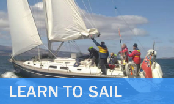

This is a link to Home Page
During this pandemic I decided on giving something new a try when it is all over having allready achieved my open water certificate in Scuba Diving and passing my Motorbike licence. See my other pages. Having researched thoroughly on what was available around scotland I found that Scotsail is the closest and widley regarded as the best place to start to learn.
One of the biggest costs in sailing after the yacht, is the foul weather gear aka "fouly's". there is a good range of different manufactures and ranges within them. from light waeter wear through to deep blue ocean gear. as most of my sailing will be taking place around the west coast of scotland i went with a topish of the range gear in the form of the henri lloyd elite offshore set from Force4. which should be sufficent for the time being.